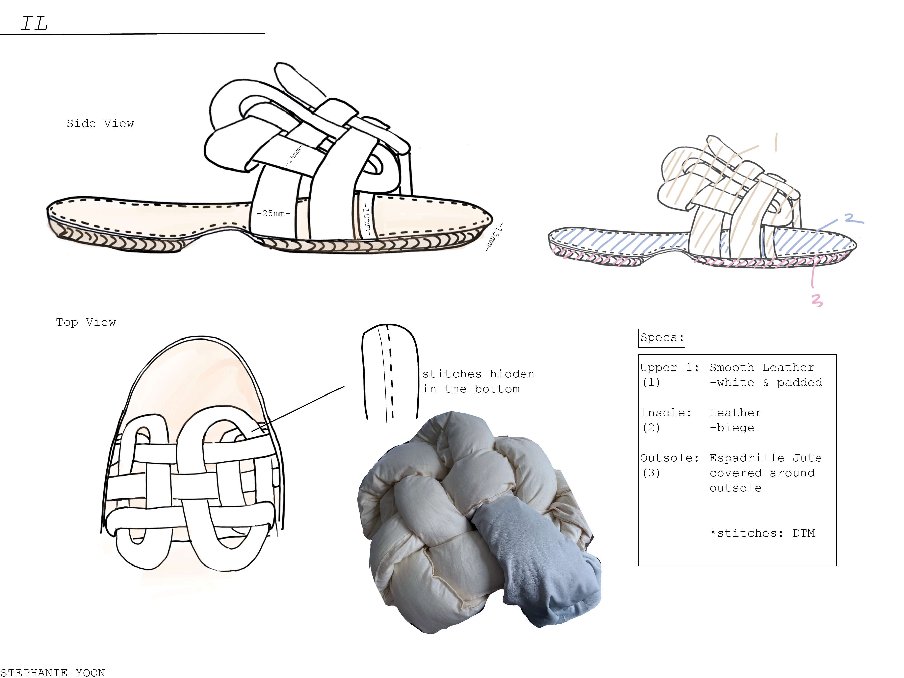
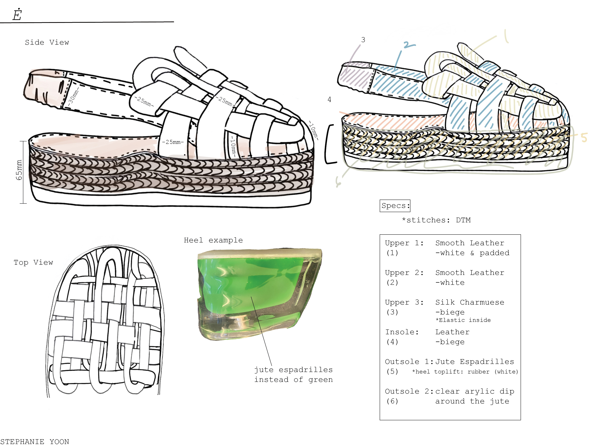
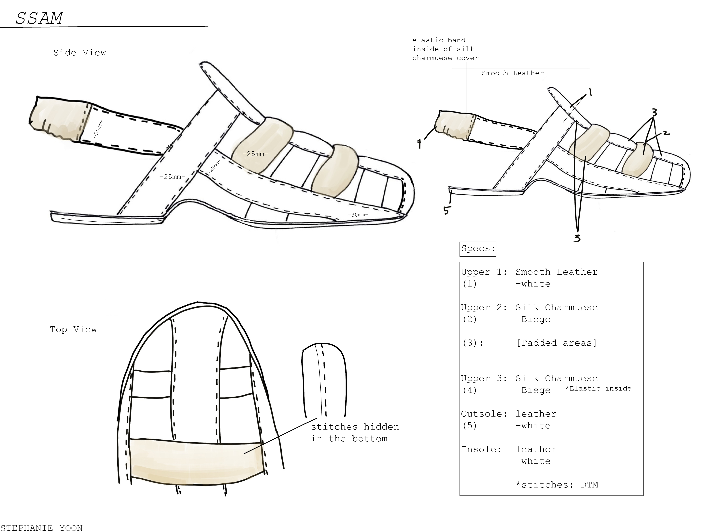
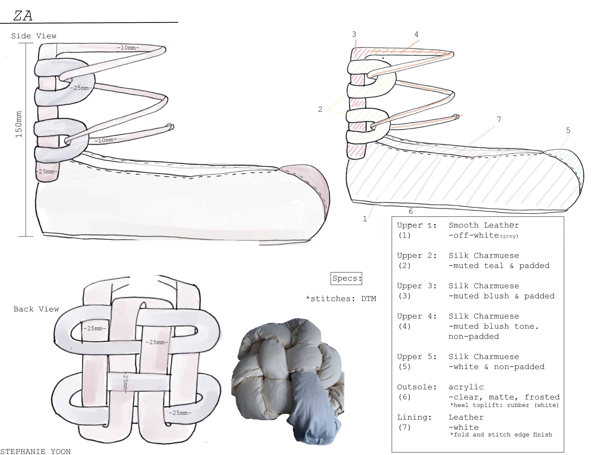
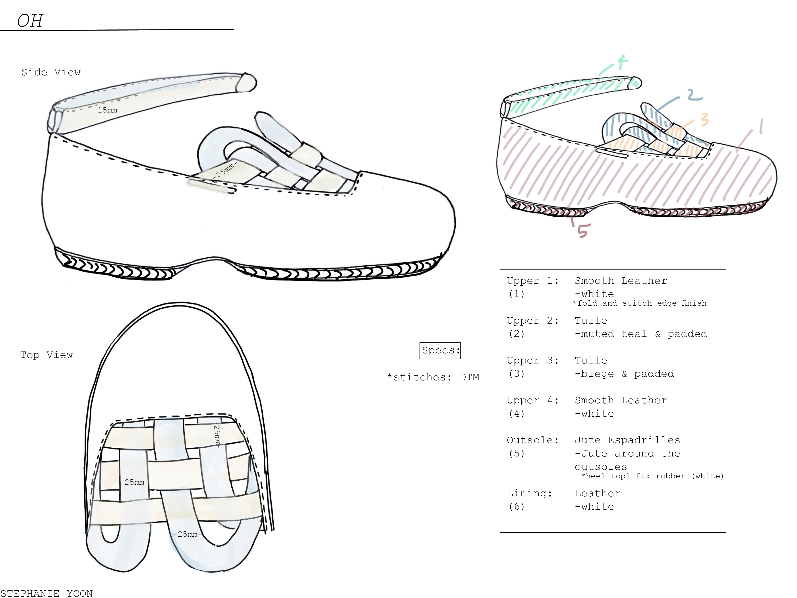
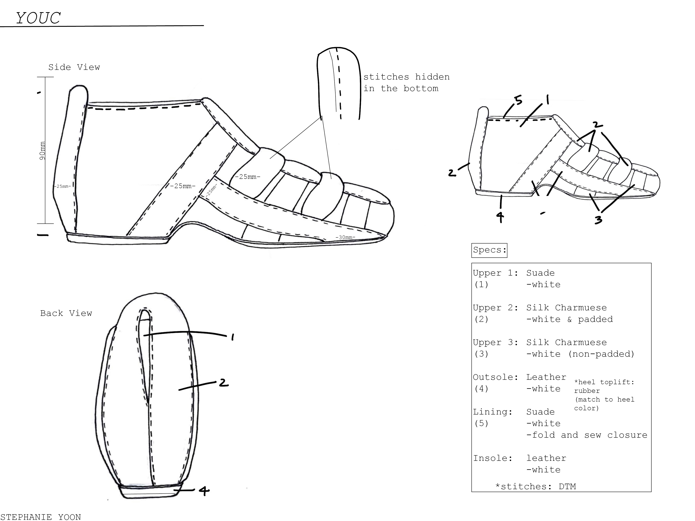
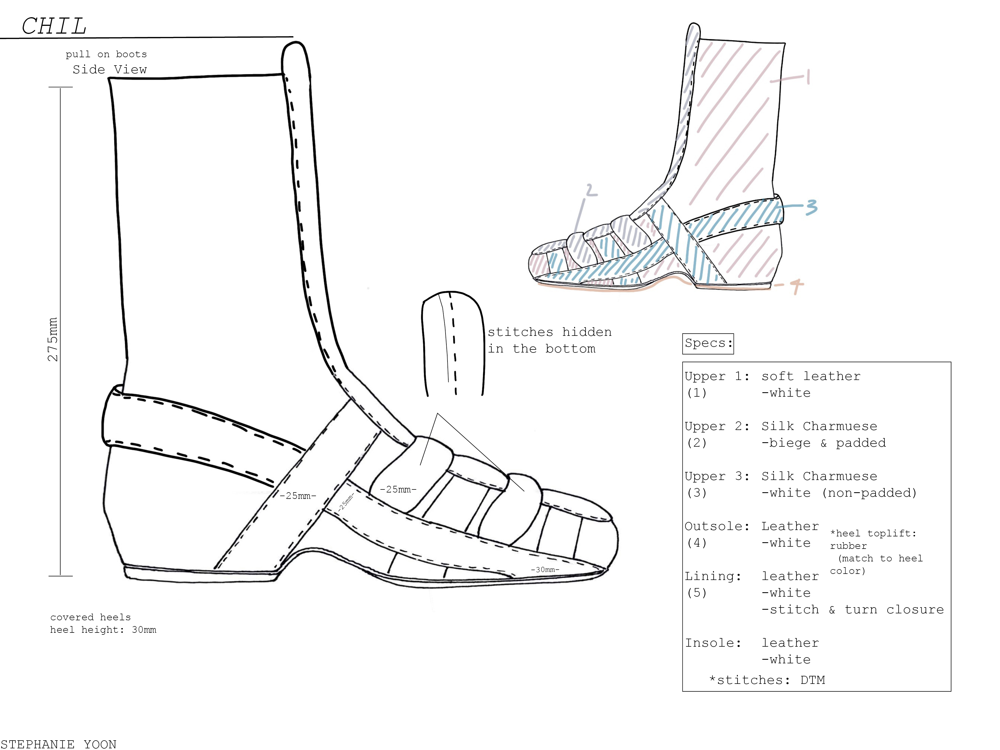
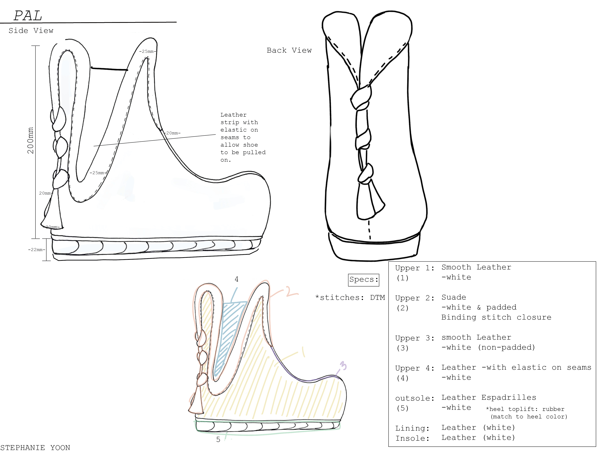
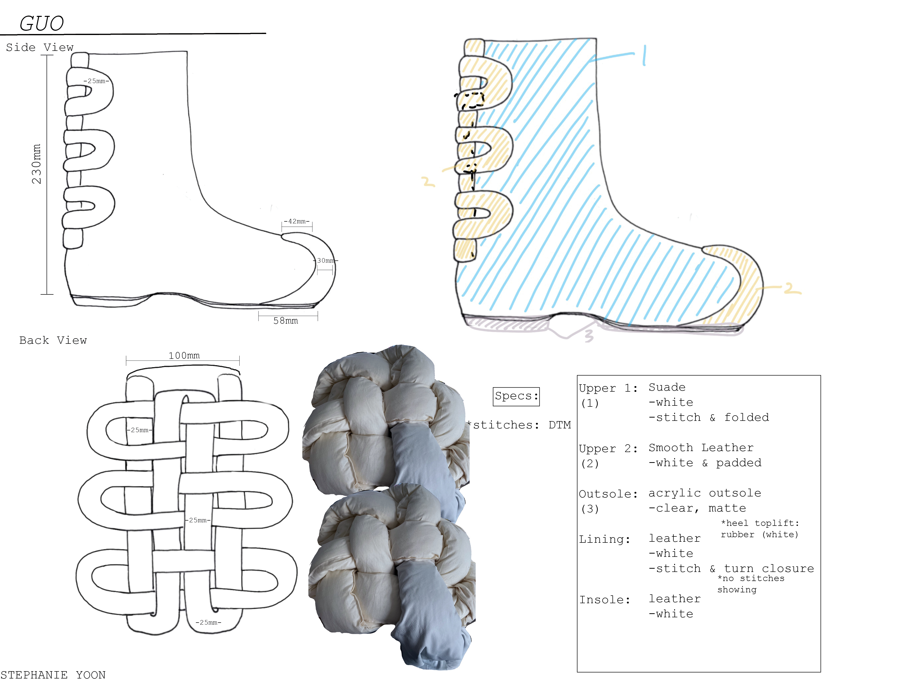
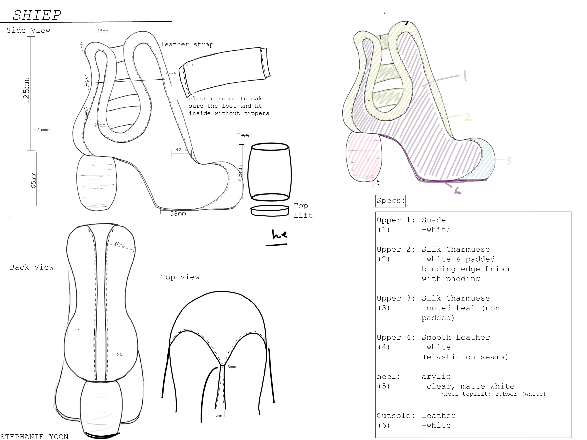

03 Politecnico Calzaturiero
spec sheets / design ideation
Through this competition (2019) I was able to sucessfully create a complete shoe lineup. The inspiration for this collection were my initial sketches for my thesis project: the weaving of my handbags can be seen throughout. As well as the shoes that Imperial Korean Guards used during the dynasties. As the awardee of this competition, the Venetian shoe makers of Politecnico Calzaturiero crafted one of my designs.
         